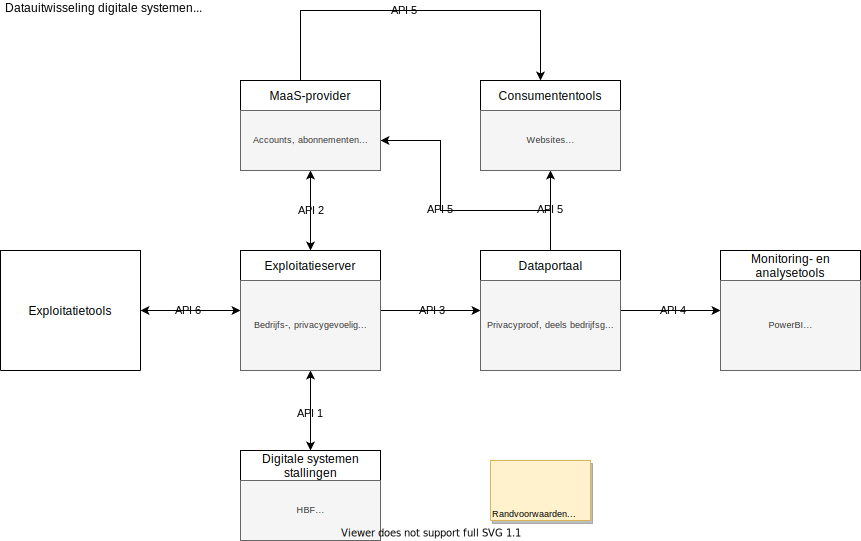

Dit document beschrijft het informatiemodel en een REST-API om gegevens over geautomatiseerde tellingen in bewaakte stallingen als straattellingen in een gemeenschappelijk gegevensmodel te kunnen opslaan.
Status van dit document
Dit document is een werkversie van een API- en datastandaard.
Het is niet vastgesteld en representeert geen consensus of instemming van CROW of deelnemende paritjen.
Deze specificatie wordt gepubliceerd door de werkgroep datastandaard fietsparkeren.
Notatie
Datatypes zijn de JSON-datatypes ([ECMA-404]) en ook de JSON-notatiewijze wordt gebruikt.
Typenotaties van TypeScript worden op plekken gebruikt. Daarbij geldt:
waar [] achter een type staat, wordt een lijst van dat type objecten bedoeld.
waar <T> staat, wordt bedoeld dat T een generieke typevariabele is.
Bijvoorbeeld bij ResultWrapper<T> en diens eigenschap result: T[].
Met ResultWrapper<Survey> wordt dan aangegeven dat het type van de eigenschap result in dat geval Survey[] is.
waar Partial<T> staat, wordt bedoeld dat alle eigenschappen van T optioneel zijn.
Waar de waarde een string is, uit een beperkte enumeratielijst, worden meerdere waardes aangegeven door ze met spaties te scheiden.
Waar in een URL een {var} voorkomt, staat dat deel voor een variabele die ingevuld moet worden.
Figuur 1 Gebruikte namespaces in dit document
Prefix
Namespace
schema:
http://schema.org/
mv:
http://schema.mobivoc.org/#
vp:
https://data.velopark.be/openvelopark/vocabulary#
vpt:
https://data.velopark.be/openvelopark/terms#
time:
http://www.w3.org/2006/time#
fp:
https://data.crow.nl/dsfp/def#
1. Inleiding
Dit onderdeel is niet normatief.
In het fietsparkeerlandschap kunnen we globaal 6 datastromen onderscheiden:
tussen de systemen van de stalling, de exploitant, MaaS-providers, straattellers naar dataportals en gebruikers van die data, zoals analisten en webapplicaties.

Figuur 2 Schematisch overzicht van de verschillende datastromen
ID
Omschrijving
API 1
Van stalling naar exploitant
API 2
Van exploitant naar MaaS-provider
API 3
Van exploitant / straatteller naar dataportal
API 4
Van dataportal naar analist
API 5
Van dataportal naar webapplicaties
API 6
Van exploitant naar exploitatietools
Deze datastandaard is in eerste instantie bedoeld voor de API's 3, 4 en 5.
Het kan ook als leidraad dienen voor de overige datastromen.
De bronnen gebruikt voor de informatiemodellering zijn:
SPDP (Gegevensstandaard voor autoparkeren),
Mobivoc (Vocabulair voor mobiliteitsgegevens) en
Open Velopark (Bicycle Parking Facility Vocabulary)
Daarmee is geprobeerd een informatiemodel op te stellen dat duurzaam gebruikt kan worden:
uitbreidingen zijn mogelijk, mappings naar andere modellen voor gegevensdeling zijn eveneens mogelijk.
2. Dataschema’s
Deze datastandaard definieert een aantal objecttypen die betrekking hebben op fietsparkeervoorzieningen en tellingen van gestalde fietsen.
Het omvat definities, gebruik en API’s voor:
Uitgebreide beschrijvingen van fietstypen (Vehicle).
Fietsenstallingen en fietsparkeervoorzieningen (ParkingFacility), ook op detailniveau (Section);
Een Survey groepeert een bron: het representeert een onderzoek of inwinning, incidenteel of doorlopend, in opdracht van een bepaalde Organisation.
Daarbij MOGEN één of meerdere onderzoeksgebieden, SurveyAreas, worden meegegeven: een geografische afbakening van een gebied, dat voor bepaalde rapportages of inzichten nuttig is.
Daarvoor worden dan overlappende ParkingFacilities meegenomen: een SurveyArea is niet een telgebied zelf.
Een implementatie MAG de inzender ‘eigenaar’ laten worden van een Survey:
dat houdt in dat andere inzenders NIET gegevens aan dat Survey MOGEN koppelen.
De rest van deze sectie is niet normatief.
Gegevens over het onderzoek —
geïnitieerd door wie?
Uitgevoerd door wie?
Wanneer?
Waar?
—
kan worden ingestuurd, maar is niet verplicht.
2.1.1 Survey
Een onderzoek of inwinning die incidenteel of doorlopend in opdracht van een bepaalde opdrachtgever wordt uitgevoerd door een of meerdere aannemers.
Een Onderzoeksgebied is een geometrische afbakening, waarmee individuele stallingsvoorzieningen samen geselecteerd kunnen worden voor verdere verwerking.
Bijvoorbeeld een stationsgebied, een strandboulevard of een uitgaansgebied.
De datastandaard biedt deze mogelijkheid zodat verschillende partijen dezelfde analyses zouden kunnen uitvoeren, op basis van dezelfde contouren van een gebied.
Ook voor historische vergelijkingen kunnen SurveyAreas worden gebruikt.
Noot
Het is een hulpmiddel om ParkingFacilities in een bepaald gebied te selecteren.
Er is geen geadminstreerde relatie tussen onderzoeksgebieden en stallingsvoorzieningen: dat is puur een geografische relatie.
Eigenaar van dit onderzoeksgebied. Alleen deze organisatie mag wijzigingen aanbrengen aan deze sectie.
name
string[]
0..N
Naam die de eigenaar of inwinner aan dit onderzoeksgebied geeft.
localId
string[]
0..N
Alternatieve IDs die de eigenaar of inwinner aan dit onderzoeksgebied geeft.
2.2 Stallingen, parkeervoorzieningen
Statische data is die data van SurveyAreas, ParkingFacilitys en Sections die niet of nauwelijks aan verandering onderhevig zijn.
Het gaat vooral om de geografische afbakening.
Mocht het zo zijn dat de geografische afbakening wijzigt, dan verdient het aanbeveling nieuwe statische items aan te maken.
Aanpassingen van bestaande items gelden namelijk ook voor reeds ingestuurde data, wat kan leiden tot verwarring bij de interpretatie van historische data.
Of en hoe een statische items gewijzigd kan worden, valt buiten het bestek van deze standaard en wordt overgelaten aan de dataportals.
2.2.1 ParkingFacility
Een ParkingFacility is elke plek waar voertuigen geparkeerd kunnen worden, bedoeld of onbedoeld: zoals een fietsenstalling, op het maaiveld, op een plein of een trottoir.
Een ParkingFacility MAG onderverdeeld worden in één of meerdere Sections.
Een ParkingFacility MOET een geometrie hebben, minimaal een punt op de kaart, maar bij voorkeur een vlakcontour.
Verdere kenmerken van de locatie, zoals openingstijden of bewaakt/onbewaakt worden op dit niveau geregistreerd en worden later verder uitgewerkt.
Wijzigingen in de onderliggende secties betekenen expliciet niet dat de parkeerlocatie wijzigt.
Andersom betekent een nieuwe parkeerlocatie wel dat ook de secties nieuw aangemaakt moeten worden -- zij verwijzen immers naar de parkeerlocatie waar ze toe behoren.
Voor historische vergelijkingen kan op basis van de geometrie en/of localId bepaald worden of het om (min of meer) dezelfde parkeerlocatie gaat.
Alleen deze eigenaar mag wijzigingen aanbrengen aan deze parkeerlocatie.
2.2.1.1 Enum LocationFeatureType
Enum
Beschrijving
CameraSurveillance
Camerabewaking aanwezig.
LockerService
Fietskluizen aanwezig.
PersonnelSupervision
De stalling is bemenst.
ElectronicAccess
Een elektronisch toegangssysteem is aanwezig.
PersonnelSupervision
Bemenst bewaakt
Indoor
Inpandig
SurfaceParking
Maaiveldstalling
2.2.2 Section
Een ParkingFacility bestaat uit 1 of meerdere Sections.
Binnen een sectie komt bij voorkeur één type parkeervoorziening voor: bijv. alleen etagerekken of alleen plekken voor buitenmodelfietsen.
Voordeel hiervan is dat de bezetting (zie § 2.3 Tellingen, metingen en capaciteit) herleid kan worden tot een bepaald type parkeervoorziening.
Er is een grote vrijheid in het indelen in secties van een ParkingFacility.
Bij digitale systemen kan de onderverdeling die in het systeem gemaakt wordt, leidend zijn.
Bijvoorbeeld: wordt in een parkeerverwijssysteem onderscheid gemaakt tussen boven- en onderlaag in een etagerek,
dan bevelen we aan hiervoor aparte secties aan te maken.
Er is een vaste administratieve koppeling tussen Section en de ParkingFacility waar het deel van uitmaakt.
Daarom is ook een geometrie van een sectie niet noodzakelijk om aan te leveren.
Voor bijvoorbeeld handmatige tellers kan dat wel handig zijn.
Een sectie kan een kortere validThrough hebben dan de parkeerlocatie waartoe het behoort:
als bijvoorbeeld een rek vervangen wordt door een buitenmodelvak.
De eigenaar van de sectie (authority) is verantwoordelijk hiervoor.
Bij handmatige tellingen is het goed denkbaar dat een veldwerker een extra sectie aanmaakt, die vervolgens goedgekeurd moet worden door de eigenaar.
2.2.3 ParkingSpaceType
Omdat niet individuele parkeerplekken gemodelleerd worden, representeert ParkingSpaceType een homogene groep parkeerplekken.
De homogeniteit kan op basis van type parkeervoorziening (ParkingSystemType) zijn, op basis van het voertuigtype waarvoor het bedoeld is (Vehicle) of een combinatie van beide.
Individuele parkeerplekken zijn voorzien als een toekomstige uitbreiding.
2.3 Tellingen, metingen en capaciteit
Dynamische data zijn de tellingen of metingen van het aantal plekken en/of het aantal geparkeerde voertuigen.
Dynamische data kan per sectie aangeleverd worden en per parkeerlocatie of per sectie uitgeleverd worden.
Teldata van de secties van één parkeerlocatie moeten dan wel op hetzelfde moment geüpdatet worden.
“In voorziening” betekent twee dingen, wat voor bepaalde Surveys geëxpliciteerd moet worden:
juist gestald in de voorziening;
neemt 1 plek in de voorziening.
2.3.6 Note
Het objecttype Note houdt bijzonderheden over de telling bij.
Zoals of het een feestdag was op moment van telling.
Eigenschap
Type
Kardinaliteit
Beschrijving
wasClosed
boolean
0..1
Was deze voorziening niet geopend tijdens de meting.
wasHoliday
boolean
0..1
Was er een vakantie tijdens de meting.
wasEvent
boolean
0..1
Was er een evenement of feestdag tijdens de meting.
wasUnderConstruction
boolean
0..1
Waren er werkzaamheden tijdens de meting.
remark
string
0..1
Vrij tekstveld.
2.4 Voertuigen
Met Vehicle kunnen uitgebreid kenmerken van fietsen, bromfietsen en andere voertuigen worden beschreven.
Met CanonicalVehicle worden prototypische voertuigen voor een telling geconcretiseerd.
De rest van deze sectie is niet normatief.
CanonicalVehicles worden gebruikt bij concrete opdrachten met een beperkte tel-resolutie:
bijvoorbeeld als elk voertuig maar in één van vier categorieën wordt geteld:
brom-/snorfiets,
fiets met accessory,
sterk afwijkend buitenmodelfiets,
gewone fiets.
Door bij Survey te annoteren welke CanonicalVehicles zijn gebruikt, is te achterhalen welke uitspraken over voertuigtypen gestaafd worden door de data.
2.4.1 Vehicle
Fietsen, brommers en andere voertuigen te verwachten in een stalling kunnen met deze datastandaard beschreven worden.
kentekenplaat is blauw, met een wit kader, wit opschrift en een hologram
*
b
moped
bromfiets
kentekenplaat is geel, met een zwart kader, zwart opschrift en een hologram
*
sb
moped
snor- of bromfiets
kentekenplaat is geel of blauw, onderscheid wordt niet gemaakt.
*
m
other
motorfiets
NL geel, internationaal anders
g
other
gehandicaptenvoertuig
driewieler, scootmobiel, rolstoel, etc
a
other
anders
2.4.4.3 Enum VehiclePropulsionType
Enum
MDS (ref.)
Aandrijving
Omschrijving
s
human
Spierkracht
bv traditionele fiets of voetganger
e
electric
Elektrisch
bv e-bike
s
electric_assist
Elektrisch ondersteund
bv e-bike
b
combustion
Verbrandingsmotor
bv traditionele bromfiets, motorfiets
2.4.4.4 Enum VehicleAppearanceType
Enum
Verschijningsvorm
ProRail
k
Kinderfiets
r
Racefiets
l
Ligfiets
b
Bakfiets / Transportfiets
f
Fietskar
v
Vouwfiets
m
Mountainbike
d
Driewieler
t
Tandem
g
Gehandicaptenvoertuig
x
Sterk afwijkend: nl. b,f,d,t,g
*
2.4.4.5 Enum VehicleOwnerType
Enum
Eigenaar
Omschrijving
p
Privé
Privéfiets
l
Lease
Leasefiets, zoals Swapfiets
h
Huur
Huurfiets, zoals OV-fiets
3. REST-API
Het informatiemodel beschreven in § 2. Dataschema’s bepaalt in algemene zin de objecttypen en eigenschappen van deze datastandaard.
Een implementatie van de datastandaard MOET ook een REST-API volgens deze sectie aanbieden.
Een implementatie MAG ook andere uitwisselingmogelijkheden aanbieden, zolang dat op een manier is die consistent is met de semantiek van § 2. Dataschema’s.
3.1 Algemeen
3.1.1 Wijze van communicatie
Deze REST-API veronderstelt communicatie over HTTP [rfc7231] en met gebruik van JSON [ECMA-404].
3.1.2 REST-methodes
Een implementatie MOET de HTTP-methodes beschreven bij elk endpoint ondersteunen.
Een implementatie MAG ook andere HTTP-methodes bij dezelfde endpoints ondersteunen.
De rest van deze sectie is niet normatief.
Als uitgangspunt geldt steeds het volgende:
de HTTP-methode GET vraagt gegevens op
de HTTP-methode POST voegt nieuwe gegevens toe.
De response van een POST-verzoek is de beschrijving van de aangemaakte resource.
de HTTP-methode PUT updatet een bestaande resource, aangegeven via een bepaalde identifier in de URL.
Bij PUT worden alleen gewijzigde kenmerken meegegeven.
De response van een PUT-verzoek is de beschrijving van de geüpdatete resource.
3.1.3 Kardinaliteit
De aangegeven kardinaliteiten in het informatiemodel geldt voor bij het insturen van gegevens.
Bij het uitleveren van gegevens MAG een implementatie sommige gegevens achterwege laten.
De rest van deze sectie is niet normatief.
Een implementatie kan bijv. uit overwegingen op het gebied van privacy of concurrentiegevoeligheid bepaalde gegevens achterwege laten.
3.1.4 Base-URL
Een implementatie MOET een base-URL bepalen waarvan de REST-API-endpoint worden aangeboden.
API-endpoints en resources worden daarvandaan geserveerd.
Bijvoorbeeld: https://fiets-api.example.org/rest/v2/, wat bij /organisations verwordt tot https://fiets-api.example.org/rest/v2/organisations.
Een implementatie MAG een versienummer in de base-url opnemen.
Noot: VeiligStallen
3.1.5 Relaties tussen objecttypen
Dit onderdeel is niet normatief.
Figuur 3 verduidelijkt de koppelingen die er bestaan tussen de verschillende objecttypen.
3.2 Algoritmes voor eigenschappen en waardes
3.2.1 Onbekende eigenschappen of waardes
Een implementatie MAG onbekende waardes of onverwachte datatypes afwijzen.
Een user agent MAG onbekende waardes of onverwachte datatypes afwijzen.
Een implementatie MAG altijd meer eigenschappen versturen naar een client.
Een user agent MOET onbekende eigenschappen accepteren.
Een implementatie MOET meer eigenschappen accepteren van een client.
Een implementatie MAG onbekende eigenschappen afwijzen.
De rest van deze sectie is niet normatief.
Deze regels zorgen ervoor dat de datastandaard flexibel genoeg is voor toekomstige uitbreidingen.
Steeds geldt bij id het volgende, wanneer er een nieuwe [Resource] wordt aangemaakt:
Een implementatie MAG een door de client gegenereerde [ResourceIdentifier] accepteren.
Een implementatie MAG een door de client gegenereerde [ResourceIdentifier] afwijzen als het niet aan eigen eisen voldoet.
Een implementatie MOET het id genereren indien het niet ingestuurd is.
Steeds geldt bij id het volgende, wanneer er al een Resource met die id bestaat:
Indien een implementatie eigenaarschap (§ 3.3.1 Eigenaarschap) bijhoudt, en de inzender is niet eigenaar, dan MOET het verzoek worden afgewezen (400 Bad Request).
Indien een implementatie eigenaarschap (§ 3.3.1 Eigenaarschap) bijhoudt, en de inzender is wel eigenaar, dan MAG de resource worden geüpdatet.
Steeds geldt bij eigenschappen die verwijzen naar een [ResourceIdentifier]:
Een implementatie MOET het verzoek afwijzen als er geen resource met die id bestaat.
Deze authority zou de eigenaar van de resources moeten zijn, maar in de regel voeren aannemers de data in.
Daarom kan een vergelijking plaatsvinden om niet-matriële wijzigingen aan Resources
3.3.2 Beveiliging
Dit onderdeel is niet normatief.
Waarschijnlijk wil een dataportal het gebruik van de API beveiligen, zeker als het gaat om het insturen van data (de POST-requests van API 3).
Om discussies over de voor- en nadelen van diverse authenticatie-protocollen te voorkomen, schrijft de datastandaard niet voor op welke manier deze beveiliging uitgevoerd dient te worden.
Het is aan te raden om authority en contractor te gebruiken voor authenticatie.
Deze id’s kunnen dan dienen om de ingestuurde data te labellen en daar zoekopdrachten aan te koppelen.
Als bijvoorbeelde contractor met id de_fietstellers_bv dynamische data instuurt, kan elke Section uitgebreid worden met een veld Section.contractor met de waarde "de_fietstellers_bv".
3.4 Responses
3.4.1 ResultWrapper<T>
Endpoints met meerdere resultaten MOETEN de [Response] in een ResultWrapper gestoken zijn.
Implementaties MOGEN metadata over de resultaten meegeven aan de ResultWrapper, zoals paginering, gebruikte filters, etc.
Endpoints met expliciet één resultaat MOGEN NIET via een ResultWrapper uitgeleverd worden.
Eigenschap
Type
Kardinaliteit
Beschrijving
result
T[]
1..N
Verzameling van één type items.
De rest van deze sectie is niet normatief.
De ResultWrapper zorgt ervoor dat het type van wat een GET-request retourneert altijd een object ({}) is.
Noot: Een mogelijke definitie van ResultWrapper in TypeScript
3.4.2 Resultaten filteren
Sommige endpoints leveren grote lijsten resultaten terug.
Voor gebruiksgemak en efficiëntie, kunnen queryparameters worden toegevoegd
Voor elk endpoint met een GET-methode, waar meerdere resultaten terugkomen, geldt het volgende:
Elk GET endpoint met meerdere resultaten (en dus verpakt in een ResultWrapper) MOET filtering o.b.v. queryparameters ondersteunen.
Voor queryparameters geldt in het algemeen:
Een implementatie MOET de bij een endpoint aangegeven queryparameters ondersteunen.
Een implementatie MAG extra queryparameters ondersteunen.
Een implementatie MOET onbekende queryparameters accepteren.
Een implementatie MOET de response waarbij onbekende queryparameters niet zijn verwerkt, accepteren.
Een implementatie MOET queryparameter-namen hoofdletterongevoelig parseren, dus authorityid=abc is hetzelfde als AuthorityID=abc.
Een implementatie MAG queryparameters combineren voor een specifiekere filtering.
Issue 3
3.4.2.1 Tijdsspanne
Deze queryparameters filteren de gegevenslijst op gegevens geregistreerd of geldig binnen een bepaalde tijdspanne.
Gebruikers van API 5 — de datastroom tussen het dataportal en de webapplicaties — zijn vooral geïnteresseerd in realtime data.
Per ParkingFacility of Section dus slechts één resultaat, het meest recente.
Voor deze gebruikers zijn de /latest endpoints gemaakt.
Merk op dat, ook al onderscheidt een Survey slechts bepaalde CanonicalVehicles, bij het insturen van metingen wordt altijd een uitgevuld Vehicle-object meegegeven.
Een daadwerkelijke meting en een gesynthetiseerde volgens bovenstaande stappenplan, HOEVEN NIET overeen te komen.
Verschillen kunnen door meettechnieken of tijdsverloop of andere omstandigheden voorkomen.
De gesynthetiseerde Observation is tenslotte niet daadwerklijk gemeten.
Issue 4
4. Uitwisseling fietsparkeerdata via tabulaire data
(Optioneel) Gebieden downloaden voor capaciteitsmeting of voor telling.
Stallingscapaciteit uploaden.
Tellingen uploaden.
Excel
TODO:
SubSurveyArea op een los tabblad.
Makkelijker voor verplichten kolommen, kan je ook type-kolom toevoegen...
TODO: Kun je teldata alleen toevoegen per Sectie?
Nou, Observation.featureOfInterest is makkelijk om alleen op Section te doen.
Homogeniteit is gewenst bij Sections, maar niet verplicht.
Wel soort van verplicht bij ProRail.
ProRail: Alleen Observations op sectieniveau.
5. Conformiteit
Naast onderdelen die als niet normatief gemarkeerd zijn, zijn ook alle diagrammen, voorbeelden, en noten in dit document niet normatief. Verder is alles in dit document normatief.
De sleutelwoorden MAG, MAG NIET, MOET, MOETEN, MOGEN, MOGEN NIET, and ZOU in
dit document zijn hebben een normatieve betekenis
zoals beschreven in het Engels in
BCP 14
[RFC2119] [RFC8174]
wanneer ze in hoofdletters geschreven
zijn.
Om conform te zijn met deze datastandaard, geldt voor een implementatie:
Elke instantie van een klasse MOET steeds eigenschappen bevatten die als minimumkardinaliteit 1 hebben.
Elke instantie van een klasse MAG NIET meer dan 1 instantie bevatten van eigenschappen die 1 als maximumkardinaliteit hebben.
Elk gebruik van de terminologie MAG gebruikt worden op een manier die consistent is met haar semantiek.
Aanvullende eigenschappen en waarden in waardelijsten MOGEN aangeboden worden door endpoints en user agents MOETEN onbekende eigenschappen kunnen verwachten.
A. Woordenlijst
Implementatie
Een [User Agent] of Server die de conformeert (§ 5. Conformiteit) aan de karakteristieken van deze datastandaard.
Request
Een verzoek, gebruikelijk van [User Agent] naar een Server.
Een verzoek is bijvoorbeeld het zoeken, invoeren, verwijderen, etc. van gegeven.
Resource
Een identificeerbare bron, zoals een bepaalde stalling of een bepaald onderzoek.
Het concept van een fiets is bijv. niet een bron in dit informatiemodel.
ResourceIdentifier
Een URL, een samgenstelde code of een UUID/GUID die uniek één Resource identificeert.
Response
Het antwoord dat na een [Request] door de Server wordt gestuurd naar de User Agent.
User Agent
Een computerprogramma dat namens een gebruiker [Requests] uitvoert.